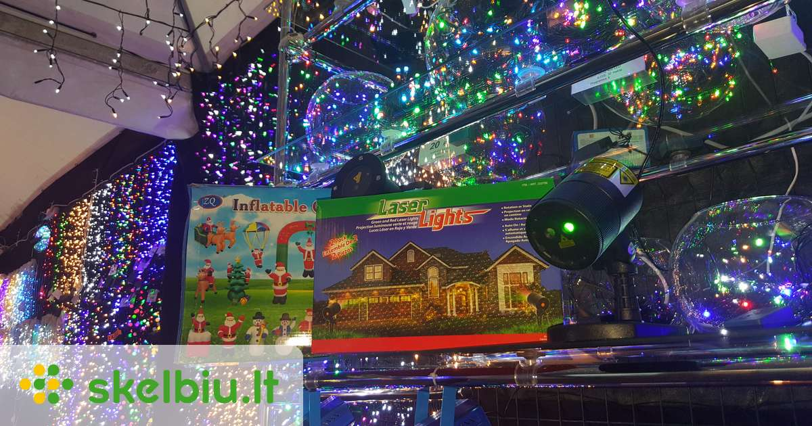
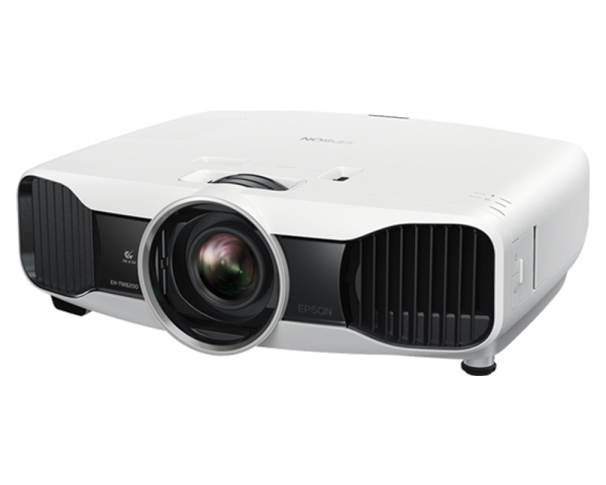

Projektoriai namų kinui full HD ir 4K. Atstovaujamos firmos JVC, Epson ir Panasonic
 Turite klausimų? +370 698 34349 Menu Ieškoti Pirkėjo paskyra Palyginti Cart Jūsų krepšelis tuščias. Palyginti Neturite prekių palyginimui.
Pirkėjo paskyra Įsimintos prekės Prisijungti Menu Namų garso aparatūra Garso kolonėlės Nešiojamos belaidės Bluetooth Montuojamos instaliacinės garso kolonėlės Garso stiprintuvai Grotuvai Blu-Ray grotuvai Ausinės belaidės Bluetooth ir laidinės | žymiausi gamintojai Garso kolonėlių laidai ir audio sistemų priedai Komplektai Bevieliai Garso įrenginiai Namų kino sistemos Soundbar-as Multi-Room DJ garso technika Patefonai Automobilių garso aparatūra Garso kolonėlės garsiakalbiai automobiliui Aukštų dažnių Automobiliniai garso stiprintuvai Garso kolonėlių ir kiti laidai | Priedai garso instaliacijai Automagnetolos Žemų dažnių garsiakalbiai automobiliui Komplektai Vaizdo registratoriai GARSO IZOLIACIJA Akcijos Gamintojai Yamaha Denon Onkyo Pioneer Marantz Harman Kardon Bose Sonos Dynaudio Klipsch Dynavoice Focal Alpine Ground Zero Hertz Morel Proson Audison JBL Jamo Heos Mark Levinson Dali Helix Monster Cambridge Audio Brax Thule Audio Canton Wilson Rega Bowers Wilkins Grado Wharfedale Audio-Technica Tannoy AKG In-Akustik Behringer Castle Mission Cabasse Neoline NAIM Monitor Audio Technics NOISE PROTECTION SoundMAGIC Marantz Professional Revel Pro-Ject Apie mus Apmokėjimas Pristatymas Blog'as Kontaktai Pirmas Namų garso aparatūra Projektoriai
Projektoriai
Projektoriai namų kinui full HD ir 4K. Atstovaujamos firmos JVC, Epson ir Panasonic.31 prekė(s)
Rūšiuoti pagal Pozicija Pavadinimas Kaina Gamintojas Rodyti 12 24 36 per puslapįŽiūrėti kaip:
Benq Home Cinema Projektorius Serija TW533 WXGA (1280x800), 3300 ANSI lumens, 15.000:1 | Nemokamas Pristatymas
379,00 € UžsakytiOptoma DE-9092EGA Projektoriaus ekranas peržiūros dydis: 2030 x 1145, formatas: 16:9 | Nemokamas Pristatymas
465,00 € UžsakytiOptoma DE-9106 EGA Projektoriaus ekranas peržiūros dydis: 2340 x 1320, formatas: 16:9 | Nemokamas Pristatymas
490,00 € UžsakytiBenq Home Cinema Projektorius Serijos TH534 Full HD (1920x1080), 3300 ANSI lumens, 15.000:1 | Nemokamas Pristatymas
539,00 € UžsakytiBenq Home Cinema Projektorius Serijos W1050 Full HD (1920x1080), 2200 ANSI lumens, 15.000:1 | Nemokamas Pristatymas
549,00 € UžsakytiOptoma DE-1123 EGA Projektoriaus ekranas peržiūros dydis: 2656 x 1660, formatas: 16:10 | Nemokamas Pristatymas
565,00 € UžsakytiOptoma DE-1109EGA Projektoriaus ekranas peržiūros dydis: 2340 x 1463, formatas: 16:10 | Nemokamas Pristatymas
575,00 € UžsakytiBenq Home Cinema Projektorius Serijos W1090 Full HD (1920x1080), 2000 ANSI lumens, 10.000:1 | Nemokamas Pristatymas
587,00 € UžsakytiOptoma HD28e projektorius atvaidzavimo technologija DLP, rezoliucija: 1080p Full HD (1920x1080) | Nemokamas Pristatymas
599,00 € UžsakytiOptoma HD29He HDR namų kino projektorius atvaidzavimo technologija DLP, rezoliucija: 1080p Full HD (1920x1080) | Nemokamas Pristatymas
749,00 € UžsakytiBenq Home Cinema Projektorius Serija W1210ST Full HD (1920x1080), 2200 ANSI lumens, 15.000:1 | Nemokamas Pristatymas
887,00 € Užsakyti AkcijaEpson EH-TW7000 4K namų kino projektorius rezoliucija 4K PRO-UHD 16:9, vaizdų dažnis 2D/3D 240 Hz / 480 Hz | Nemokamas Pristatymas
Sena kaina: 1 325,00 €
Speciali kaina 1 079,00 €
UžsakytiOptoma UHD30 4K UHD namų kino projektorius atvaidzavimo technologija Texas Instruments™ 0.47” 4K UHD DMD, rezoliucija: UHD (3840 x 2160) | Nemokamas Pristatymas
1 099,00 € UžsakytiBenQ Projektorius TK800 4K HDR 16:9/1920x1080/3000Lm/10000:1 | Nemokamas Pristatymas
1 217,00 € UžsakytiOptoma UHD42 4K UHD namų kino projektorius atvaidzavimo technologija DLP, rezoliucija: UHD (3840x2160) | Nemokamas Pristatymas
1 499,00 € UžsakytiBenQ W1700 CineHome 4k Projektorius 4K UHD (3840 x 2160) su XPR technologija HDTV 480i, 480p, 576i, 576p, 720p, 1080i, 1080p, 2160p | Nemokamas Pristatymas
1 529,00 € UžsakytiPanasonic PT-AT6000 Full HD projektorius , nemokamas pristatymas
1 899,00 € UžsakytiEpson EH-TW7300 4K projektorius , nemokamas pristatymas
2 690,00 € UžsakytiJVC DLA-X500 4K projektorius , nemokamas pristatymas
4 200,00 € UžsakytiJVC DLA-X5000 4K projektorius , nemokamas pristatymas
4 350,00 € UžsakytiJVC DLA-X5500 4K projektorius , nemokamas pristatymas
4 499,00 € UžsakytiJVC DLA-X5900 projektorius kleidžiamas triukšmas: 21 dB. Lempos tarnavimo laikas: 4,500 valandų. Įėjimai: HDMI x 2 (3D, Deep Colour/HDCP 2.2), RS-232C (D-sub 9pin) x 1, LAN (RJ-45) x 1, Trigger x 1 (Mini jack), 3D Sync x 1 (Mini DIN). Matmenys: 455 x 179
4 499,00 € UžsakytiJVC DLA-RS400E 4K projektorius , nemokamas pristatymas
4 599,00 € UžsakytiJVC DLA-X700 4K projektorius , nemokamas pristatymas
5 950,00 € UžsakytiJVC DLA-X7000 4K projektorius , nemokamas pristatymas
6 250,00 € UžsakytiJVC DLA-X7500 4K projektorius , nemokamas pristatymas
6 499,00 € UžsakytiJVC DLA-RS500E 4K projektorius , nemokamas pristatymas
6 699,00 € UžsakytiJVC DLA-X900 4K projektorius , nemokamas pristatymas
8 000,00 € UžsakytiJVC DLA-X9500 4K projektorius , nemokamas pristatymas
8 999,00 € UžsakytiJVC DLA-X9000 4K projektorius , nemokamas pristatymas
9 000,00 € UžsakytiJVC DLA-RS600E 4K projektorius , nemokamas pristatymas
9 199,00 € Užsakyti31 prekė(s)
Rūšiuoti pagal Pozicija Pavadinimas Kaina Gamintojas Rodyti 12 24 36 per puslapįŽiūrėti kaip:
xKaina: Actual Price: Our price is lower than the manufacturer's minimum advertised price. As a result, we cannot show you the price in catalog or the product page.
You have no obligation to purchase the product once you know the price. You can simply remove the item from your cart. Our price is lower than the manufacturer's minimum advertised price. As a result, we cannot show you the price in catalog or the product page.
You have no obligation to purchase the product once you know the price. You can simply remove the item from your cart.
Apie AudioVideo.lt
Jau 21 metus firma Muzikis Garažas specializuojasi garso aparatūros ir namų sistemų projektavime prekyboje ir instaliacijoje. Vertiname sprendimų paprastumą, patogų valdymą, pritaikymą prie patalpos interjero, racionalumą. Kiekvieną savo projektą įgyvendiname kruopščiai ir atsakingai iki pilno klientų lūkesčių patenkinimo. Didžiausias garso ir audio aparatūros salonas ir e. parduotuvė. Esame vieninteliai ir oficialūs garso aparatūros lyderių kaip Dynaudio, Dynavoice, Ground Zero, Hertz, Audison, Helix, Brax, Morel, Focal atstovai Lietuvoje. Esame oficialūs dyleriai prekinių ženklų JBL, Yamaha, Pioneer, Bose, Dali, Denon, Harman/Kardon, Marantz, Rega, Pro-Ject, Mission, Monitor Audio, Wharfedale, Teac, Heos, Jamo, Revel, Sonos, Cambridge Audio, Magnat, Alpine, AKG, Monster, Behringer, Mark Levinson, NAD, Bang & Olufsen. Prekes galima užsisakyti telefonu, e. paštu arba internetu. Prekių pristatymas 0 - 3 darbo dienos. Nemokamas pristatymas užsakymui didesniam negu 50 Eur. Geriausios kainos garantija - kreipkitės pasiūlysime geriausią kainą rinkoje Jūsų pasirinktam produktui. Prekiaujame tik nauja, originalia technika su gamintojo garantija . Atsiskaitymas grynaisiais kurjeriui arba salone grynais/kortele, banko pavedimu, paypal arba išsimokėtinai Mokilizingas , General Financing arba ŠB lizingas .Tax Free
Tax Free pirkimo sąlygos skirtos www.audiovideo.lt klijentams | возврат НДС | Tax Free for home audio
Kontaktai
Firma "Muzikinis garažas"
Į.k. 135552995
Pvm kodas: LT355529917
Armatūrininkų g. 1, Kaunas 52373, Lietuva
info@audiovideo.lt
Darbo laikas I-V nuo 9.00 iki 18.00 Val.
Šeštadienį - iš anksto susitarus.
Aukščiausios klasės ekspertų kosultacijos,
visada laukiame Jūsų skambučio:
+370 698 34349
Susisiekite su mumis per FB Messenger
Socialiniai tinklai
Automobilių garso aparatūra
Automobiliniai garsiakalbiai Žemo dažnio garsiakalbiai automobiliams Magnetolos Automobiliniai graso stiprintuvai Automobiliniai graso tech. komplektai Priedai instaliacinės medžiagos Garso ir vibro izoliacija Vaizdo registratoriai radarų detektoriaiNamų garso aparatūra
Garso kolonėlės Ausinės Grotuvai Garso siprintuvai resyveriai Multi-room garso technika Namų kino komplektai Garso technikos komplektai Bevieliai garso įrenginiai Soundbar-ai Laidai ir priedaiAutomobilių garso aparatūros gamintojai
Alpine Pioneer JBL Hertz Audison Ground Zero Helix Morel Dynaudio FocalNamų garso aparatūros gamintojai
Yamaha Denon Onkyo Pioneer Harman/Kardon Marantz JBL Dynaudio Dali Dynavoice © 2020 Muzikinis Garažas jau 21-metus esame Lietuvos garso technikos rinkos lyderis